1. 法人の基本属性
公益目的事業費用の規模分布
3,987
有効回答法人数
46.8%
回収率
21.2%
20百万円未満（最多）
16.7%
600百万円以上
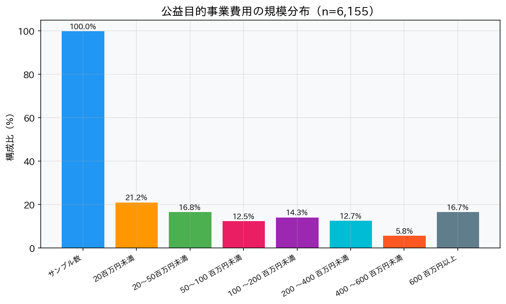
規模の二極化：小規模法人（20百万円未満）が最多の21.2%を占める一方、600百万円以上の大規模法人も16.7%存在し、規模の二極化が顕著です。
2. 寄附金収入の実態
2.1 寄附金収入金額の年次推移
54.9%
寄附金0円の法人（H30）
-3.7pt
5年間の改善幅
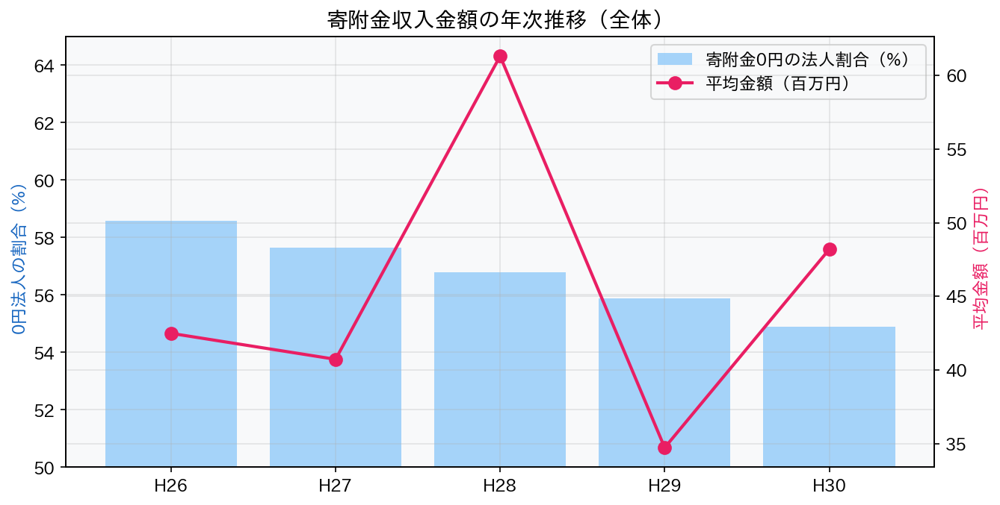
過半数が寄附ゼロ：寄附金0円の法人割合はH26の58.6%からH30の54.9%へ改善傾向にあるものの、依然として過半数が寄附を受けていない状況です。
2.2 個人寄附 vs 法人寄附
| 指標 | 個人寄附 | 法人寄附 |
|---|---|---|
| 0円の法人割合 | 69.7% | 64.2% |
| 1億円以上 | 0.7% | 2.1% |
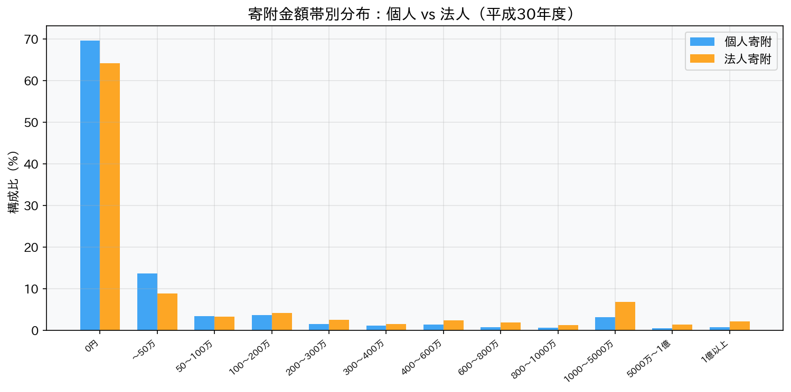
法人寄附が主力：法人寄附の方が「寄附あり」の割合がやや高く、高額帯（1,000万円以上）では法人寄附が個人を大幅に上回ります。
2.3 寄附金0円法人割合の推移
3. 寄附金収入総額の推移（H20〜H24）
378十億円
H23ピーク（震災年）
2.2倍
個人寄附の急増（H22→H23）
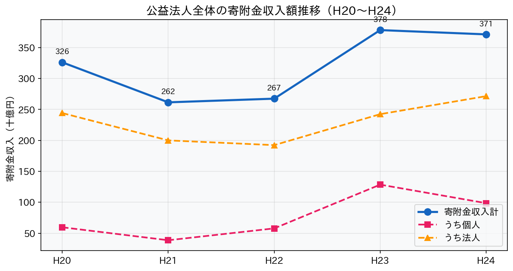
| 年度 | 合計（十億円） | 個人 | 法人 |
|---|---|---|---|
| H20（2008） | 326 | 60 | 244 |
| H21（2009） | 262 | 39 | 200 |
| H22（2010） | 267 | 58 | 192 |
| H23（2011） | 378 | 128 | 242 |
| H24（2012） | 371 | 99 | 272 |
震災の影響：H23年度（2011年）の急増は東日本大震災の影響で、個人寄附が前年比2.2倍に急増しました。
🌐 寄付白書
4. 税額控除制度の効果分析
4.1 制度概要
税額控除制度（H23年度創設）：PST（パブリック・サポート・テスト）要件を満たす公益法人への個人寄附について、（寄附金額−2,000円）×40% を所得税から控除できる制度。
🌐 国税庁 No.1266
4.2 導入前後の増加率比較
+194%
対象法人の個人寄附増加率
8.6%
税額控除対象法人の割合
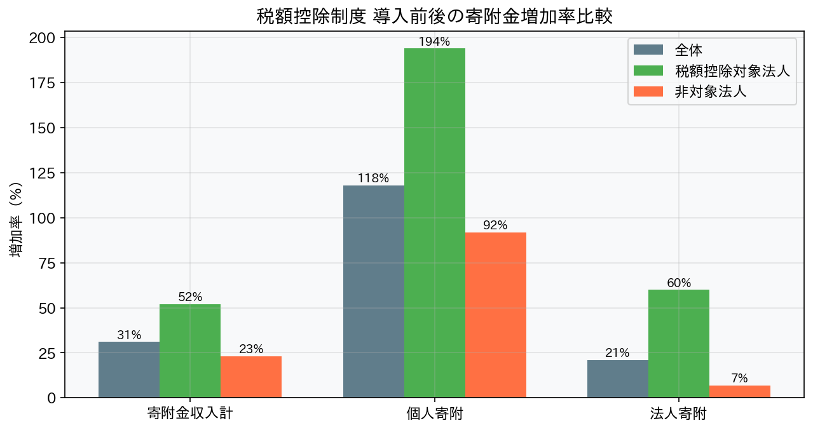
| 指標 | 全体 | 税額控除対象 | 非対象 |
|---|---|---|---|
| 寄附金収入計 | +31% | +52% | +23% |
| 個人寄附 | +118% | +194% | +92% |
| 法人寄附 | +21% | +60% | +7% |
4.3 税額控除対象法人の状況
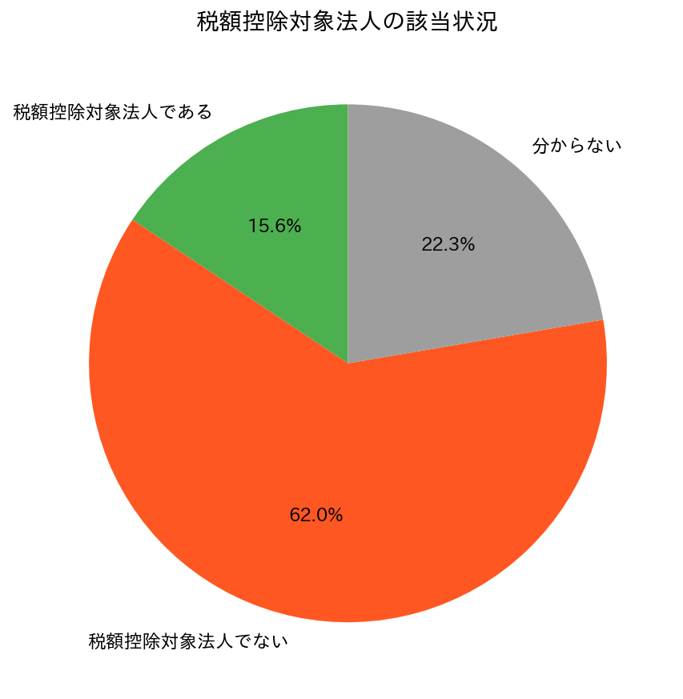
PST要件の壁：税額控除対象法人はわずか8.6%（341法人/3,987法人）。PST要件（年平均寄附者100人以上、受入寄附金30万円以上、寄附金割合1/5以上のいずれか）は小規模法人にとってハードルが高い。
🌐 公益法人Information
5. 寄附金の必要性と活動状況
5.1 寄附金収入の必要性
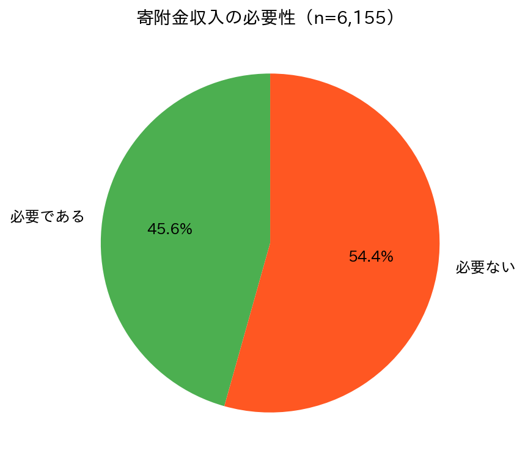
5.2 必要な理由
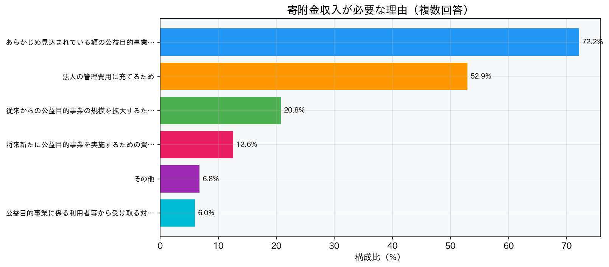
主な理由：経営基盤の強化（38.9%）、臨時支出への資金調達（11.1%）が上位。
5.3 寄附金を得るための活動
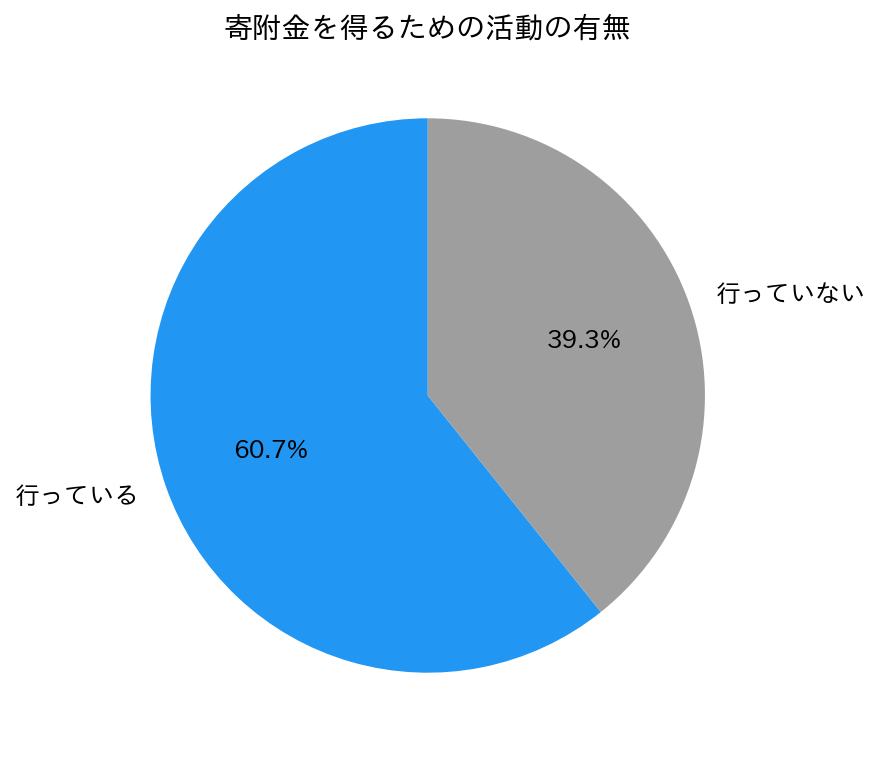
必要性と行動のギャップ：寄附金の必要性を認識しながらも、実際に活動を行っている法人は限定的です。
5.4 寄附金が必要でない理由
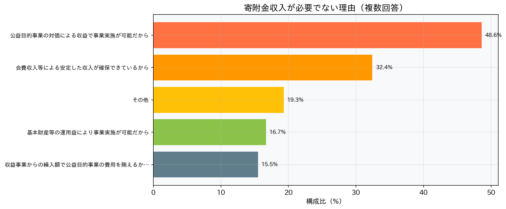
6. 募金活動の手段
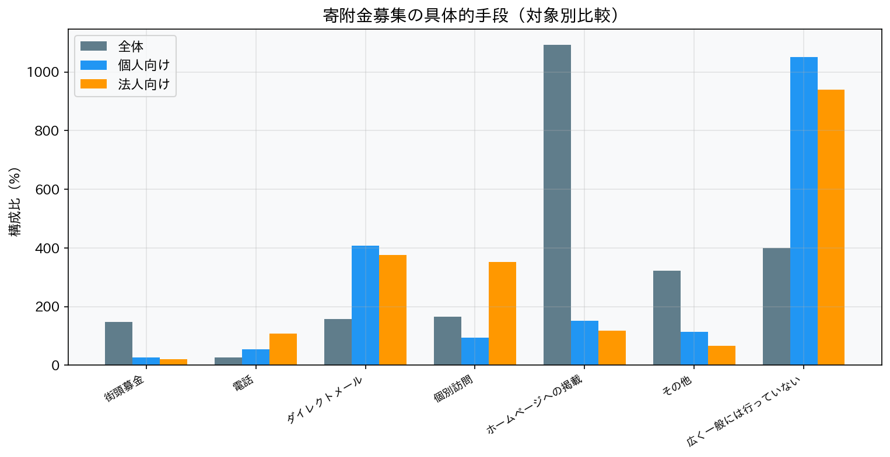
| 手段 | 特徴 |
|---|---|
| ホームページへの掲載 | 最も一般的な手段 |
| ダイレクトメール | 個人向けに活用 |
| 個別訪問 | 法人向けに有効 |
| 街頭募金 | 割合は低い |
| 電話 | 限定的 |
デジタル化の余地：調査時点（H30）ではホームページ掲載が主流。近年はオンライン決済やクラウドファンディングの活用が広がっており、デジタル化の推進余地が大きい。
🌐 補足情報
7. 寄附金の使途
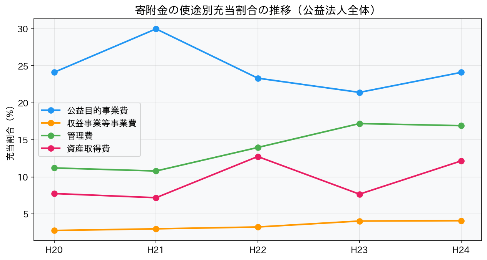
| 使途 | 公益法人全体 | 税額控除対象法人 |
|---|---|---|
| 公益目的事業費 | 24.1% | 64.2% |
| 管理費 | 16.9% | 44.1% |
| 資産取得費 | 12.2% | 12.6% |
| 収益事業等事業費 | 4.1% | 5.2% |
公益活動への充当：税額控除対象法人は公益目的事業費への充当率が64.2%と顕著に高く、寄附金が本来の公益活動に有効に使われていることが確認されます。
8. 総合考察
主要知見
| テーマ | 知見 |
|---|---|
| 寄附金の二極化 | 過半数（約55%）の公益法人は寄附金収入がゼロ。少数の大規模法人に集中 |
| 税額控除の効果 | 対象法人の個人寄附は+194%。制度による明確なインセンティブ効果 |
| 法人寄附が主力 | 寄附金総額の約7割は法人寄附。個人寄附の拡大余地は大きい |
| 活動ギャップ | 必要性を認識しつつも募金活動を行っていない法人が多い |
| PST要件の壁 | 税額控除対象法人は8.6%。小規模法人のハードルが高い |
政策的示唆
1. PST要件のさらなる緩和 — H28年度の緩和に続き、小規模法人が要件を満たしやすくする制度設計が必要
2. デジタル化の推進 — オンライン決済・クラウドファンディング等の活用促進
3. 情報発信支援 — 募金活動のノウハウ・成功事例の共有による底上げ
4. 寄附文化の醸成 — 個人寄附の拡大に向けた社会的機運の醸成
2. デジタル化の推進 — オンライン決済・クラウドファンディング等の活用促進
3. 情報発信支援 — 募金活動のノウハウ・成功事例の共有による底上げ
4. 寄附文化の醸成 — 個人寄附の拡大に向けた社会的機運の醸成
🌐 2024年には改正公益法人制度が成立し、遊休財産規制の見直し・会計報告の簡素化等の改革が進行中。
参考文献・出典
- 📊 内閣府「令和元年度 公益法人の寄附金収入に関する実態調査」
- 📊 e-Stat「公益法人の寄附金収入に関する実態調査」
- 🌐 国税庁「No.1266 公益社団法人等に寄附をしたとき」
- 🌐 公益法人Information「税制上の優遇について」
- 🌐 日本ファンドレイジング協会「寄付白書2025」